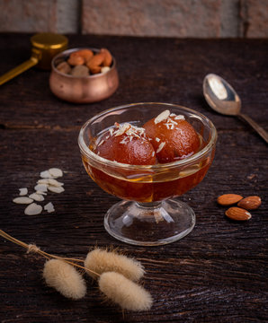

Baati Chokha
Ingredients
- Wheat flour
- Ghee
- Salt
- Vegetables
Recipe
- To make baati, mix wheat flour, ghee, salt, and water for stiff dough.
- Shape dough into balls and bake until golden brown and cooked through in oven or tandoor.
- For Chokha, peel off roast brinjals and then mash with onions, tomatoes, chilies, salts, coriander. Serve with baati, dal, pickle, and ghee.
Chaat
Ingredients
- Boiled Potatoes
- Papdi
- Chutneys
- Sev
Recipe
- Peel off potatoes and Cut them into small cubes and set aside.
- Heat butter, add cumin seeds. Saute onions until golden.
- Add ginger-garlic paste, salt, spices, tomatoes, potatoes and cook until they turn soft. Garnish with papdi and sev, a squeeze of lemon juice, and sprinkle some chaat masala.
Butter Paneer
Ingredients
- Paneer
- Butter
- Onion-ginger-garlic paste
- Spices
Recipe
- Cut paneer into cubes and set aside.
- Heat butter, add cumin seeds. Sauté onions until golden.
- Saute onions, add ginger-garlic paste, spices, tomato puree, salt. Cook masala, and paneer. Garnish, and serve with roti or naan.
Gulab Jamun
Ingredients
- Khowa
- Ghee
- Sugar
- All-purpose flour, baking powder
Recipe
- Mix khoya, flour, baking powder for smooth dough.
- Roll dough into balls, fry in ghee until golden. Cook on low heat to prevent burning.
- Make sugar syrup with equal parts sugar and water. Add flavorings. Remove from heat, cool slightly. Soak fried gulab jamuns in syrup for 30 minutes.
